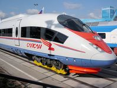

формат - JPEG, качество - 80, размер - 198px*148px, вес - 9,5kb

формат - PNG, качество - 80, размер - 198px*148px, вес - 55,1kb
формат - GIF-анимация, качество - 80, размер - 198px*148px, вес - 16,7kb
Здравствуйте, уважаемые друзьяю. Сегодня поговрим о том, какой формат изображения лучше использовать на сайте. Какие форматы графических файлов сегодня доступны и нужно ли гнаться за новинками графических форматов.
На сегдяшний день изображения на сайте являются неотъемлемой частью. Они помогают передавать то, что невозможно отразить словами, добавляют эмоций и задают атмосферу и настроение. Изображения легко могут улучшить ваш сайт, но в то же время сделать его значительно хуже. Они придают красоту нащим сайтам за которую приходится расплачиваться скоростью загрузки сайта.
Самые популярные и распространенные форматы изображений для сайтов используемые сегодня.
Все изображения для сайтов, подразделяются:
Растровые изображения состоят из пикселей, в которых хранится цвет и значение прозрачности. Такими форматами представлены изображения в статьях, кнопками, иконками и элементами дизайна. Эти изображения популярны среди разработчиков и владельцев сайтов.
Основной минус растровых изображений – они плохо масштабируются. То есть при увеличении размера картинки, идёт потеря качества.
Векторные изображения состоят из линий и точек маршрутов. Информация об изображении хранится в математических инструкциях по отрисовке, что позволяет масштабировать такие изображения сколько угодно без потери качества.
Все эти изображения могут и используются на современных сайтах. Только нужно понимать, что перед загрузкой на сайт, изображение нужно оптимизировать!
Чтобы разобраться с форматами, предлагаю рассмотреть эти понятия на более осязаемых объектах...
Этот формат использует алгоритм сжатия без потери качества. По количеству цветов и уровню прозрачности доступен в двух видах 8 и 24-бит. Оба поддерживают прозрачность.
8-битный пользуется малой популярностью, а вот 24-битный широко используется для различных изображений на сайте. За счёт прозрачности позволяет создавать комбинированные изображения. Часто используется для создания анимированных кнопок, иконок, css-спрайтов, где необходим эффект прозрачности.
Изображения в формате PNG можно много раз оптимизировать, редактировать – оно сохранит первоначальное качество. Формат также поддерживается всеми браузерами и устройствами, что гарантирует его отображение на любом экране.
По качеству изображения выглядят лучше, чем JPG, но вес файла будет больше.
За рулём сижу довольный -
Ездить просто и легко!
Только руль чуть-чуть огромный
И педали далеко
Из вышерасположенных изображений ‹Car›, мы можем видеть, что лучше всего использовать по качеству изображения в формате PNG, Рис.- 1, так как сдесь мы видим много красивых и плавных переходов яркости и насыщенный контраст цвета. Сочетание цветов позволяет создать новый оттенок и сделать красивый переход, добавляя глубины объекту или фону.
Еще один плюс данного формата в том, что можем его рассматривать в плане дополнительный обработки изображения, как его прозрачность для вычленения каких либо деталей и вставки в другие изображения или наложения других эффектов. B связи с оформлением картинки - градиентами качество на данных изображениях в сранении с другими форматами очень сильно изменяется, и вес изображений в том числе. Если посмотреть на фомат GIF с увеличением 500%, то мы увидим на нем точки, а вот плюсом данного изображения будет являться его вес - всего 11,5kb,
что очень заметно отличается от лидера по качеству - в формате PNG.
Что касается формата JPEG, то здесь мы видим, что вся область изображения очень сильно искожена и на ней видно множество изъянов. Данный формат больше предназначен для изображений цвета которых наполняет рисунок естественным полноцветным изображением и которые больше предназначены для переноса изображений на како-либо холст.
JPEG или JPG – один из самых популярных форматов изображений для сайтов. Формат поддерживает миллионы цветов, что и даёт ему лидирующую позицию в представлении фотографий и картинок на сайте.
Изображения в этом формате достаточно хорошо оптимизируются практически без потери качества, что позволяет получить файл меньшего размера без визуальной потери качества. Следует помнить, что каждая последующая оптимизация снижает качество.
Формат поддерживает 24 бита на пиксель, по 8 для зелёного, синего и красного, что делает этот формат «truecolor», который может отображать более 16 000 000 цветов.
Также JPEG имеет встроенную поддержку метаданных (EXIF) таких как: модель использованной камеры, выдержка, диафрагма и светочувствительность, разрешение кадра и многие другие.
Большим недостатком этого формата является отсутствие прозрачности. То есть, комбинировать изображения в таком формате не получится.
Мне купили паровозик,
Сразу два вагона возит.
Я включу его, и он
За собой везёт вагон.
Вот бы мне в нём прокатиться,
Только жаль - не поместиться.
Из вышерасположенных изображений ‹Train› мы можем видеть, что оптимальнее всего использовать изображение в формате JPEG, Рис.- 1, так как сдесь мы также можем видеть много ярких и контрастных цветов на изображении, а также красивых и плавных переходов - градиентов. Градиент – это плавный переход от одного цвета к другому. А так как в основе работы JPEG лежит работа с градиентами, то в этом плане ор считается однозначным лидером.
Этот формат обычно используется в цифровой фотографии и не подходит для сжатия чертежей и текстовой графики, где резкий контраст между соседними пикселями приводит к появлению заметных искажений.
Но если посмотреть на формат PNG который весит - 55,1kb и зная о том, что этот формат можно оптимизировать много раз без потери качества, а также работать с ним когда необходима повышенная точность полноцветных изображений и изображений с резкими переходами цветов, и если учесть главную особенность формата PNG — это поддержка альфа-прозрачности, то-есть каждому пикселю в отдельности можно задать свою степень прозрачности и полупрозрачности для вычленения каких либо деталей и вставки в другие изображения, тогда лучше использавать форматы PNG и GIF. то мы можем учитывать все эти плюсы формата PNG для работы по ситуации.
GIF
Это 8-битный формат, который допускает 8 бит на пиксель, по три на красный и зелёный и два на синий, поддерживающий 256 цветов, прозрачность и анимацию. Формат поддерживает прозрачность — каждый пиксель изображения может быть в двух состояниях: прозрачный или непрозрачный, полупрозрачность не поддерживается.
За счёт поддержки малого количества цветов, вес файла тоже минимальный.
Формат не подходит для фотографий и изображений с широким диапазоном цветов.
Алгоритм GIF выбирает 256 наиболее используемых в исходном изображении цветов, а все остальные оттенки создаются путём подмешивания — подбора соседних пикселей таким образом, чтобы человеческий глаз воспринимал их как нужный цвет. По этой причине GIF не подходит для хранения полноцветных изображений и фотографий.
Особенностью GIF является поддержка анимации, то есть этот формат может хранить несколько кадров, которые сменяют друг друга с определённой частотой, которая широко используется при создании GIF-анимаций, баннеров, кнопок, иконок и так далее.
В современных сайтах этот формат используется всё реже.
Нарисую я в альбоме
Голубое море,
Белый парус над волною
Бьётся на просторе
Из вышерасположенных изображений ‹Paints›, мы можем увидеть, что оптимальнее всего это изображение будет использоваться Рис.- 1 в формате GIF, так как это формат был разработан компанией CompuServe в далёком 1987 для передачи растровых изображений по интернету. Что мы можем видеть из нашего рисунка. Однотонные цвета и прямые рисованные линии.
При сжатии без потерь GIF-файлы могут идеально воспроизводить свои ограниченные цветовые палитры при многократном повторном сжатии. Другая важная вещь, заключается в том, что они могут быть анимированными. Используя несколько кадров изображения, нарисованных по порядку, можно создать видимость движения.
Но если посмотреть на формат JPEG который как и GIF весит - 8,9kb, мы также можем его использовать, но без дополнительных плюшек, как прозрачность и анимирование.
SVG
Это формат векторных файлов на основе XML. Формат стал набирать популярность совсем недавно, так как ранее он слабо поддерживался в браузерах. И из-за проблем отображения никто не торопился его использовать.
На сегодняшний день SVG поддерживается всеми современными браузерами. Но, проблемы с отображением все, же встречаются.
Наиболее часто используют этот формат для простых изображений, таких как логотипы, элементы дизайна и так далее. Неприменим для фотографий.
Формат SVG имеет малый вес, отлично масштабируются, обеспечивая чёткость изображения на любом разрешении экрана, поддерживает анимацию, можно управлять через CSS и размещать в HTML, сокращая количество запросов.
WEBP
Формат с открытым исходным кодом, разработан Google специально для интернета. Сегодня YouTube использует преобразование миниатюр для видео в формат WebP.
Формат обеспечивает превосходное сжатие и поддерживает прозрачность. Он сочетает в себе преимущества JPG и PNG форматов без увеличения размера файла. Формат использует новый алгоритм сжатия, в котором искажения отличаются от искажений других форматов. Ухудшается детализация и структура, в то время как края остаются чёткими.
Особенности WebP:
- сжимает изображения без потерь лучше, чем PNG (на 26% по данным Google);
- сжимает изображения с потерями лучше, чем JPEG (на 25–34% по данным Google);
- поддерживает прозрачность (альфа-канал).
Иногда WebP сжимает изображение даже лучше, чем заявляет Google.
Виду относительной новизны формата и несмотря на все его преимущества, он поддерживается не всем браузерами. На сегодняшний день WebP поддерживается только Chrome, Opera, IE, Edge, Firefox и Safari.
Заключение
Это мнение начинающего разработчика веб-сайтов. Надеюсь, объяснил всё понятно, и вы теперь знаете, какой формат изображений лучше использовать на сайте и почему.
Я не настаиваю на использовании одного какого-то формата, а рекомендую комплексный подход.
Возможно, когда WebP получит широкую поддержку, мы все перейдём на него и заменим jpg и png на своих сайтах.